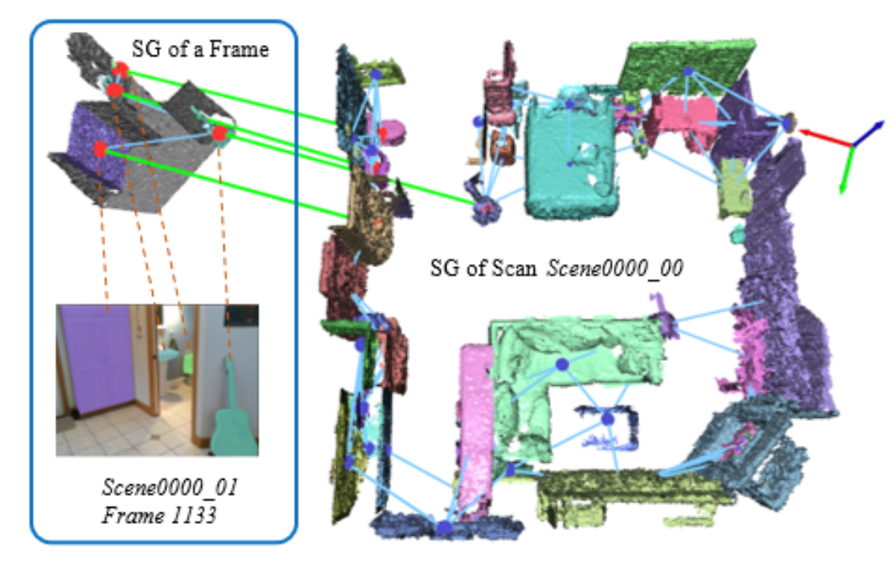
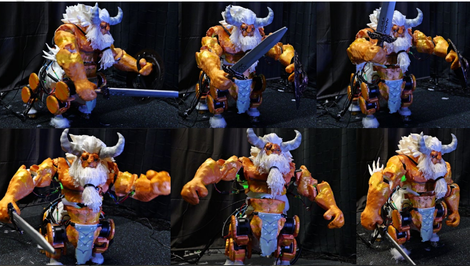
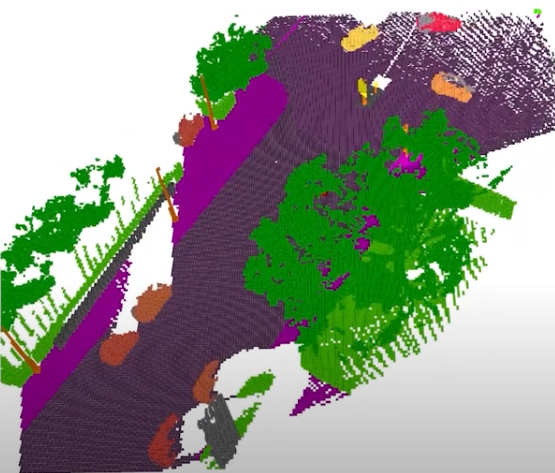
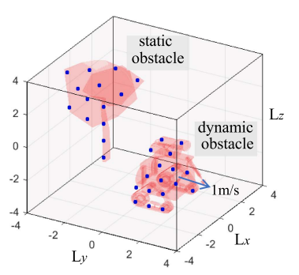
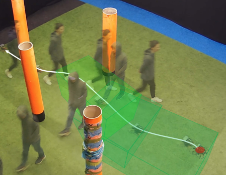
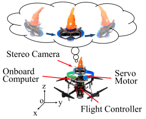
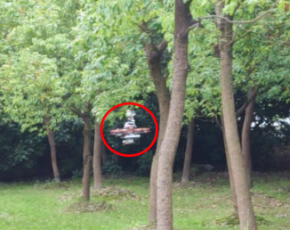

OpenSGA: Efficient 3D Scene Graph Alignment in the Open World
Under review in IJRR, 2026
Tenure-track Associate Professor, Shanghai Jiao Tong University
I am a tenure-track associate professor at Robotics Institute, School of Mechanical Engineering, Shanghai Jiao Tong University. Before joining SJTU, I was a postdoctoral researcher at the Autonomous Multi-Robots (AMR) Lab in Cognitive Robotics, Delft University of Technology. My research interests are in robot perception and spatial AI for mobile robots and multi-robot systems, with a focus on dynamic environments The long-term goal is to make robots operate in human environments safely and efficiently. In my spare time, I also work on automatic robot design using optimization, machine learning, and object representations. I am currently looking for one PHD and one MS student to join my group in 2027 fall semester. If you are interested in joining my group, please feel free to contact me.

Shanghai Jiao Tong University
Tenure-track Associate Professor in School of Mechanical Engineering
2026.7 – Present

Delft University of Technology
Postdoctoral Researcher in Autonomous Multi-Robots (AMR) Lab
2023.2 – 2026.6
ETH Zurich
Visiting Researcher in Mobile Robotics Lab (MRL)
2025.8 – 2025.9
Shanghai AI Lab
Intern in OpenRobot Lab
2022.8 – 2023.1
Shanghai Jiao Tong University
Ph.D. Student in CIUS Lab
2016.9 – 2022.12
Delft University of Technology
Visiting Ph.D. Student in Autonomous Multi-Robots (AMR) Lab
2021.10 – 2022.5
Shanghai Jiao Tong University
Undergraduate Student in ME
2016.9 – 2022.12

Under review in IJRR, 2026


IEEE Transactions on Robotics, 2025

IEEE Transactions on Robotics, 2023

IEEE Robotics and Automation Letters, 2022

IEEE/ASME Transactions on Mechatronics, 2021

IEEE Robotics and Automation Letters, 2021